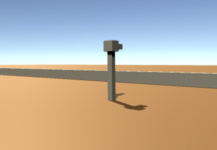

PROJECTILE PHYSICS SIMULATION
Project Description:
For this assessment I was tasked with implementing a clay pidgeon style physics simulation within the Unity Game Engine.
With the limitation that I could not use the built-in physics and collision systems.
- The target launcher will use random values to launch projectiles.
- Projectiles will behave under the laws of physics where gravity is the same as on earth.
- The "shooter" is automated and must calculate to fire to intercept the target projectile.
- There should be a basic User Interface in place that indicates the number of targets hit and the number of air speed of the target projectile in m/s.
- The simulation should run until the user presses the escape key to halt execution of the program.
The requirements for the assessment were as follows:
Basic Design:
As we were required to use custom physics in this assessment the first thing I did was start to design a "projectile" class that has a velocity and acceleration.
The base turret would, using a custom pseudo random number generator, determine a random place to fire the projectile.
The "interceptor" turret then takes those values and plugs them into newton's equations of motion using the value the
user specifies for how long the intercept should take.

Custom Collision system:
The collision of the two projectiles is then determined by my custom collision system for spherical objects.
In this system, each object is checked against every other spherical object and if their size is smaller than
the distance between them then a collision has taken place.
This system is not perfect as with many projectiles on screen, the collision checks would start to take up alot of processing power.
However since in this simulation specifically there are only ever 2 projectiles on screen at a time this was not a concern for the project.